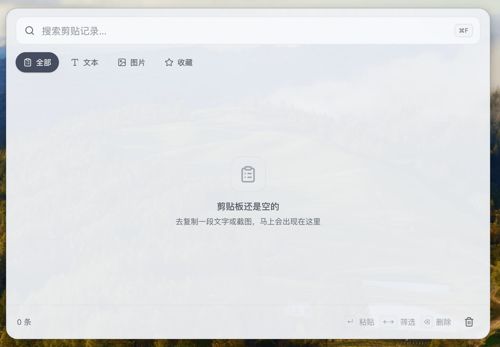
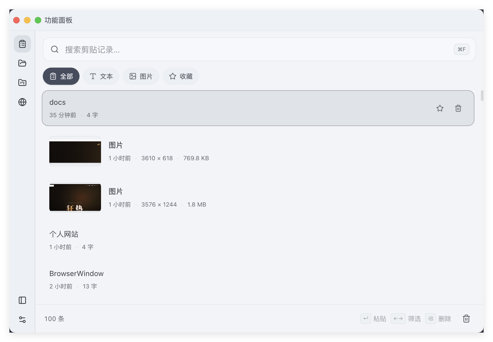
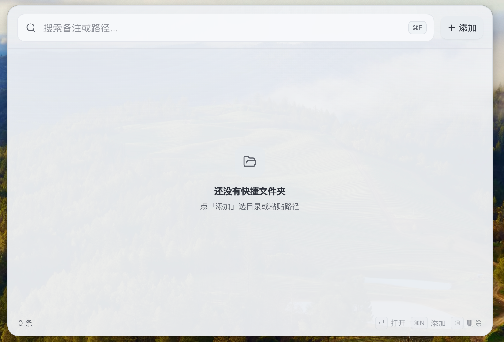
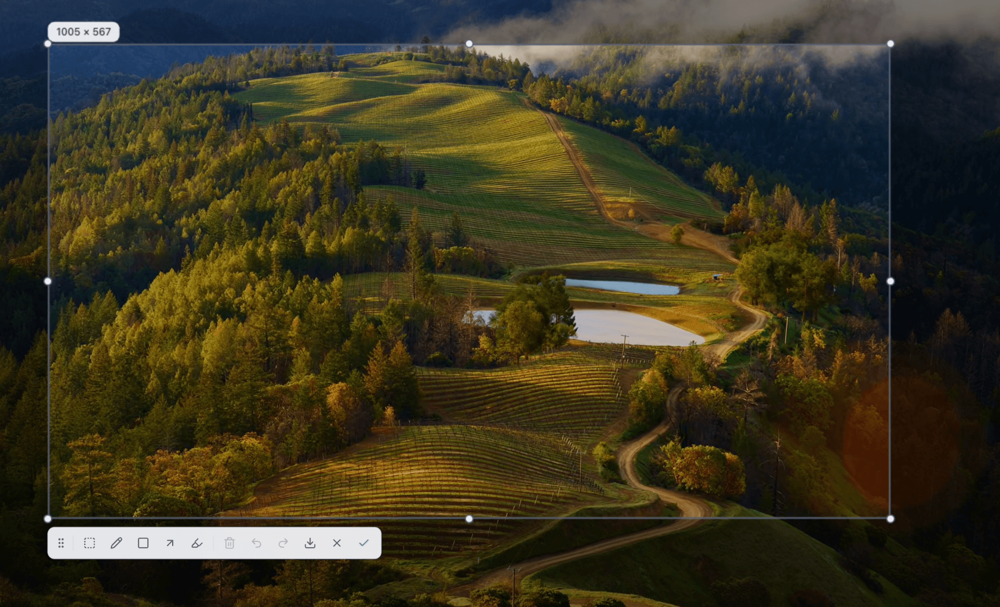
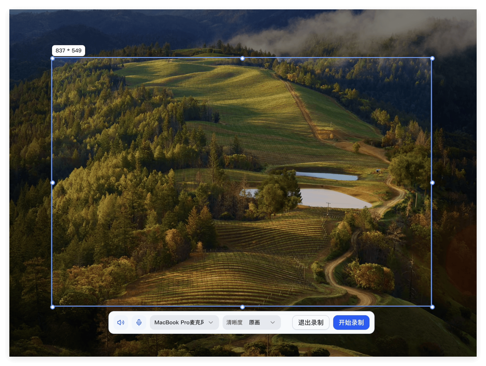
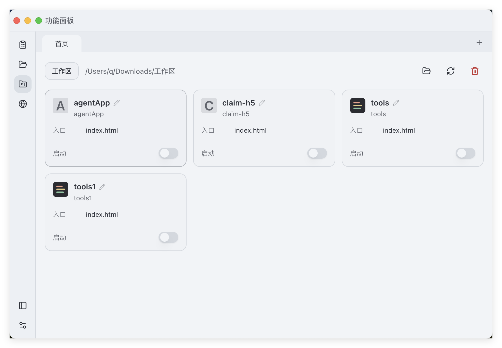
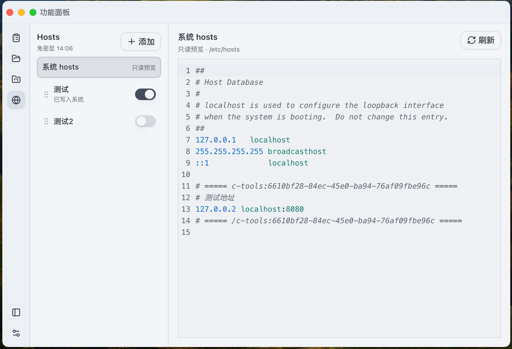
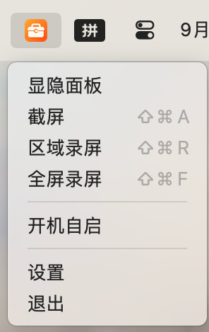
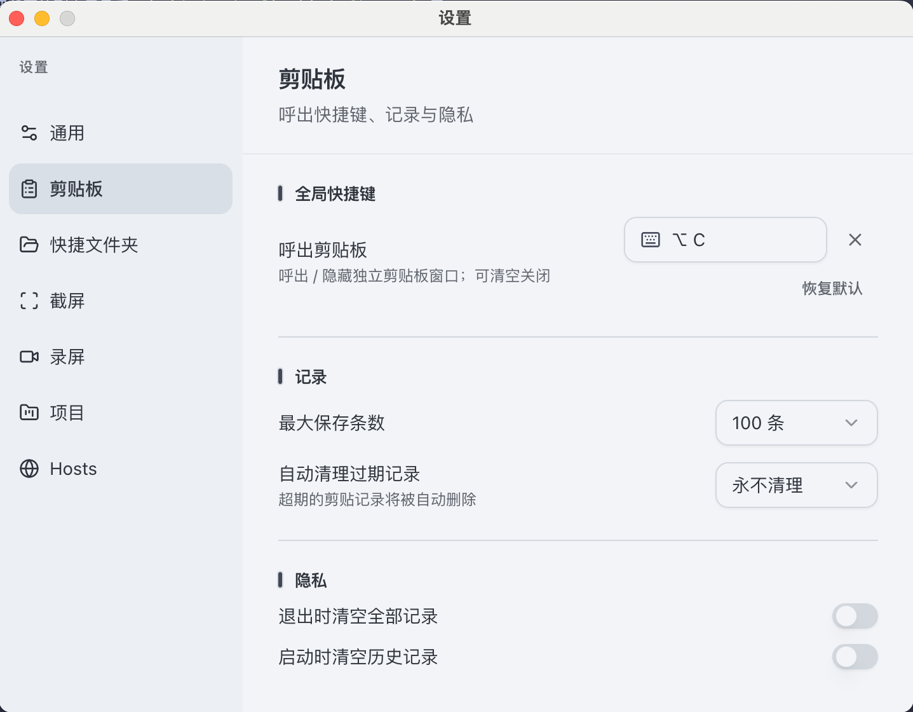
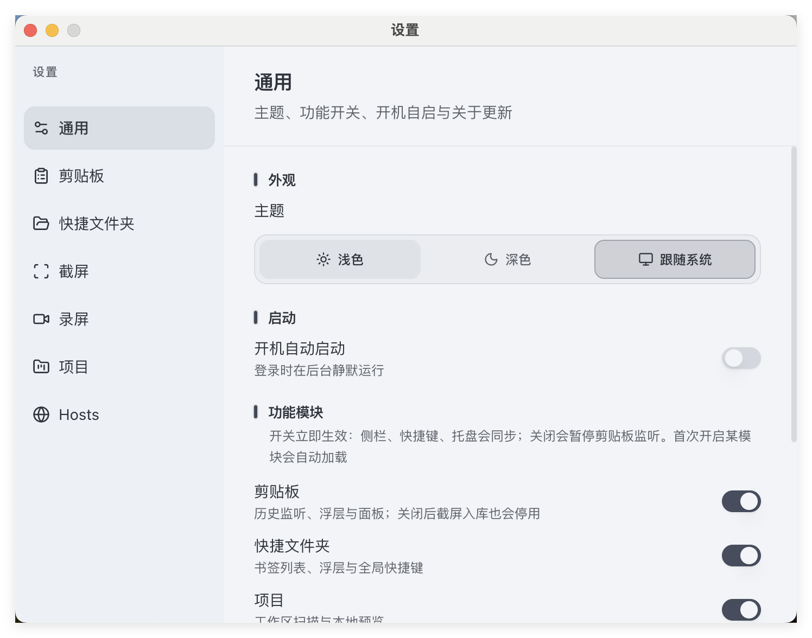

01
剪贴板
后台监听文本与图片；历史去重、置顶、收藏与搜索筛选。快捷键呼出独立浮层，贴回呼出前的应用；也可在功能面板里慢慢翻。
- 类型筛选 · 虚拟滚动
- 图片缩略图与原图预览
- 空格多选 / Shift 批量粘贴

macOS · Windows · 托盘常驻
剪贴板历史、快捷文件夹、截屏标注、屏幕录制、本地项目预览、Hosts 多方案 —— 全局快捷键一呼即出，不打断你手头的事。

点开即用；截屏 / 录屏走托盘与全局快捷键，其余住在功能面板里。
后台监听文本与图片；历史去重、置顶、收藏与搜索筛选。快捷键呼出独立浮层，贴回呼出前的应用；也可在功能面板里慢慢翻。

把常用目录收成书签：备注、搜索、拖拽排序。Enter / 双击直接打开访达或资源管理器，浮层用完即关。

QQ 式多屏截屏：点选窗口或框选区域，笔 / 矩形 / 箭头 / 马赛克。完成写入系统剪贴板并入库历史，也可直接下载 PNG。

区域或全屏录制；系统声与麦克风可实时开关。停录后自选保存路径，悬浮条计时与音量反馈一目了然。

选定工作区后扫描静态站点，一键起本地服务，用浏览器式页签内嵌预览。改端口、清分区缓存、右键检查，都在面板里完成。

多方案 Tab 编辑，语法高亮；开开关即提权写入系统 hosts，块外内容不动。免密会话滑动续期，写成功自动 flush DNS。

关窗口不退出；程序坞 / 托盘随时置顶功能面板。



源码与安装包都在 GitHub。欢迎提 Issue / PR。
打开仓库